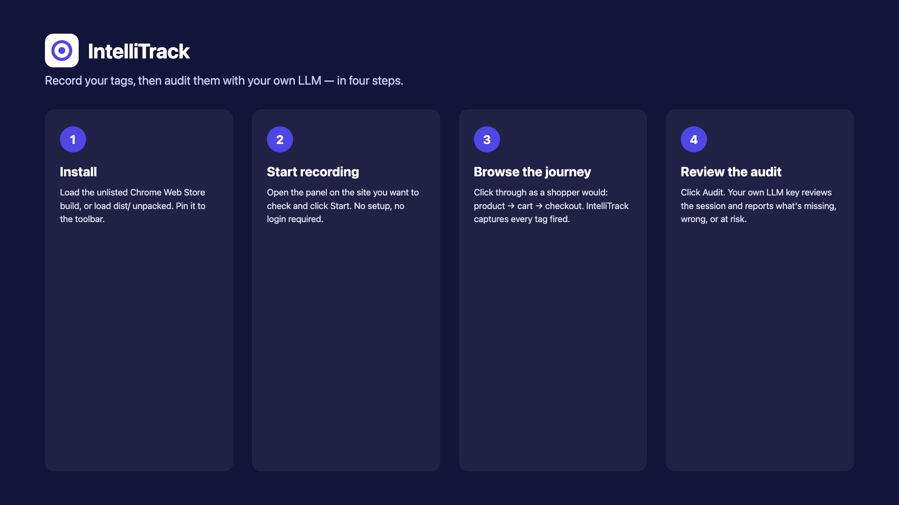
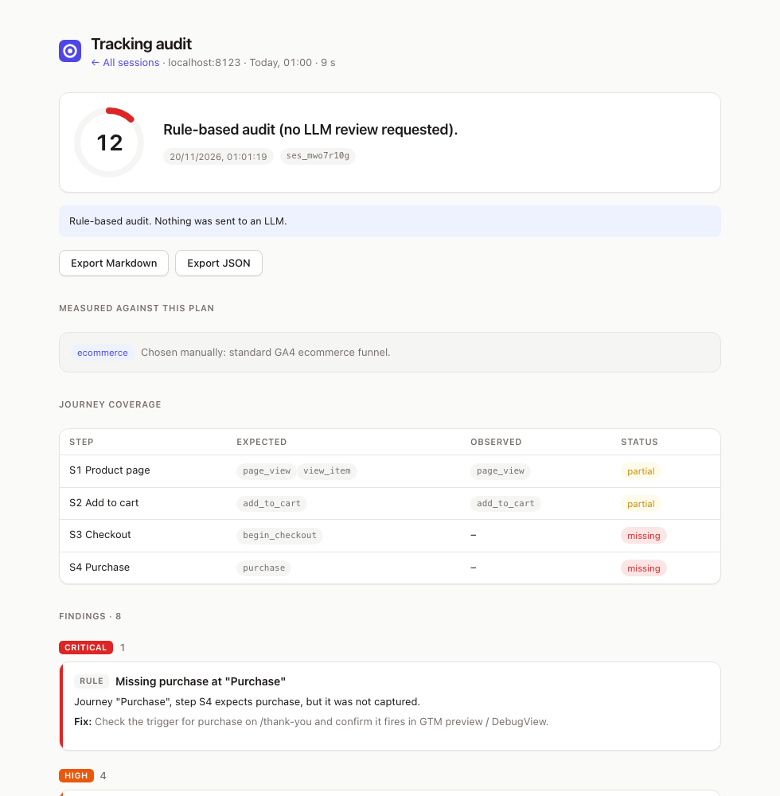
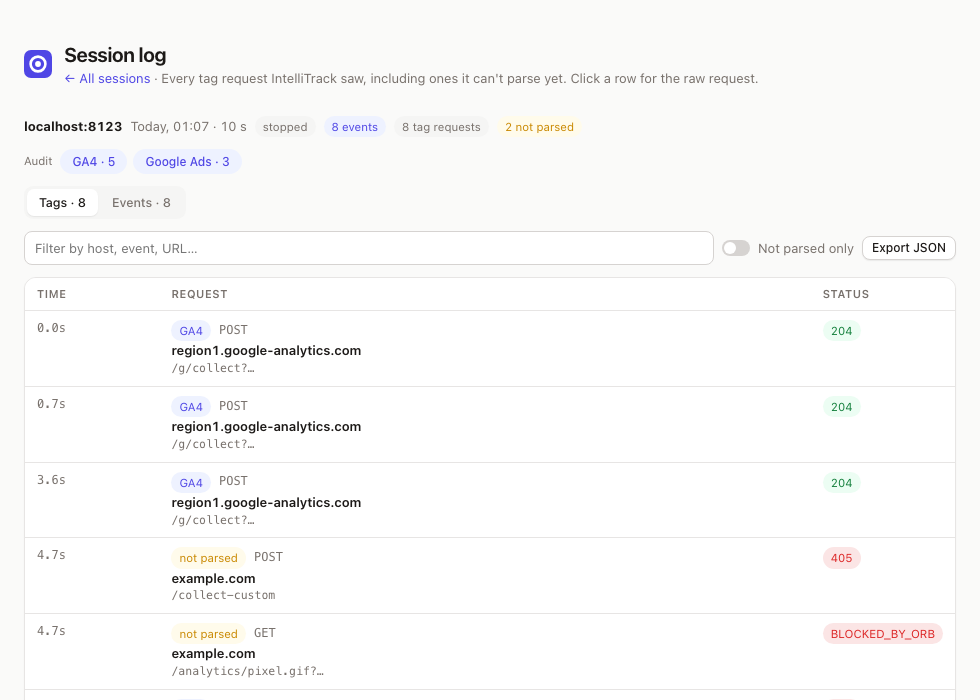

Audit the tracking tags on any website with your own LLM.
IntelliTrack is a Chrome extension that records the analytics tags a page fires while you click through a journey — product page → cart → checkout, or a lead form, or an article — shows you every raw request, and turns it into an audit: what works, what is missing, what is wrong.
Why a browser extension, and why an LLM
No script or LLM can click "add to cart" for you. The tags a site actually fires — GA4, Google Ads, GTM's dataLayer — only show up once a person browses the site the way a visitor would. IntelliTrack sits in your browser and watches that happen.
Deciding whether an event is missing, a parameter is wrong, or a consent signal is off takes judgement, not just rules. IntelliTrack ships a rule engine for the mechanical checks, and sends the (redacted, previewed) session to your own LLM for the rest — never ours, never a shared server.
How it works

Install
Load it from the Chrome Web Store (unlisted pilot link) or unpacked from source. Pin it to the toolbar.
Start recording
Open the panel on the site you want to check and press Start. No account, no setup.
Browse the journey
Click through as a visitor would. IntelliTrack captures every tag fired, live.
Review the audit
Press Audit. Your own LLM key reviews the session and reports what's missing, wrong, or at risk — consent issues first.
What you get


| Vendor | Status |
|---|---|
| Google Analytics 4, including server-side GTM | supported (default) |
| Google Ads conversions, with GA4-vs-Ads cross-checks | supported (opt-in) |
| Everything else (Meta, TikTok, Bing, Criteo, Adobe, Braze, Segment, …) | captured and shown raw as not parsed |
dataLayer pushes (GTM / gtag.js) | recorded next to the hits: pushed vs. sent |
Rules cover missing events and parameters, value mismatches, duplicates, plaintext personal data, consent signals, and failed or blocked hits — before anything reaches an LLM.
What's next
The GA4 + Google Ads core is built. Next on the public roadmap board:
- More vendors: Meta Pixel, Floodlight/CM360, Braze, Salesforce, Segment, Mixpanel, and the long tail of ad pixels.
- Rule packs tuned for lead-generation and content/publisher sites, not just e-commerce.
- Passphrase-encrypted API key storage, ahead of a public Chrome Web Store listing.
- A shared UI design pass and PDF export for handing reports to clients.